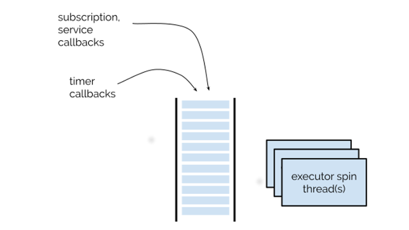

layout: true <div class="header"><img src="https://rosin-project.eu/wp-content/uploads/rosin_ack_logo_wide.png" style="background-color:transparent"/></div> <div class="footer"><img src="https://www.ipa.fraunhofer.de/content/dam/ipa/ipa.svg" /><p>© Fraunhofer IPA</p></div> <div class="triangle"></div> --- class: center, middle <h1> <center> ROS 2 Foundation </center> </h1> <h3> <center> An introduction to core concepts </center> </h3> --- ## Overview - #### ROS computation graph - #### What is a node? - #### Node composition - #### ROS 2 topics and messages - #### ROS 2 Executor - #### ROS 2 Services - #### ROS 2 Actions - #### ROS 2 Params - #### ROS 2 Launch files --- ## Computation graph ### Displays the peer to peer network of ROS processes that process data together .cols[ .fifty[ ] .fifty[ - Reflects the communication in ROS system - Participants of the graph are called *Nodes* - Nodes can typically - publish (provide) data OR - subscribe (read) data ] ] --- ## What is a Node? - An element that serves a single, modular purpose in a robotics system - Camera driver - Controlling wheel motors - Perception unit - Used to create publishers, subscribers, services, etc - Most common ROS client libraries - `rclcpp`: Binaries of C++ files - `rclpy`: Python scripts - Command to run a ROS node ```bash ros2 run <package_name> <executable_name> [arguments] ``` - No master required to discover other nodes! --- ## Automatic discovery ### ROS 1 Node communication <div> <center> </center> </div> --- ## ROS 1 vs ROS 2 ### Node structure <center> </center> --- ## Automatic discovery ### ROS 2 Node communication .cols[ .fifty[ ] .fifty[ ] ] <h4> <center> No central point of failure! </center> </h4> --- ## General ROS Structure <div> <center> </center> </div> --- ## ROS 2-Unified API ### ROS 2 Client libraries .cols[ .fifty[<div> <center> </center> </div>] .fifty[ - APIs are built on top of a common core client library - Ensures that any changes made to functionalities are reflected in all derived client libraries ] ] --- ## Node Composition ### Unified API - Aggregation of nodes in a single process - Simplifies code reuse #### Rationale Defers process layout decisions to deploy-time .cols[ .fifty[ - Nodes in different processes - Allow for fault isolation - Are easier to debug ] .fifty[ - Nodes in the same process - Low overhead - More efficient communication ] ] --- ## Node Composition ### Writing Node as a component - Inherits from the Node class - Allows to be imported and used by other scripts - Able to create publishers, subscribers, servers, and clients within the node .cols[ .fifty[ - Subclass of `rclpy.Node` <center> </center> ] .fifty[ - Subclass of `rclcpp.Node` <center> </center> ] ] --- ## Node Composition ### Deploying a component - Use ROS 2 Service APIs: Load components via - service calls - command line tools - launch - Alternatively: - Manual composition - Run standalone executables --- ## Communications Infrastructure ### The ROS middleware provides these facilities: - Anonymous publish/subscribe message passing - Recording and playback of messages - Request/response remote procedure calls - Pre-emptable request/response remote procedure calls - Distributed parameter system --- ## ROS 2 Topics - Asynchronous communication - Multiple concurrent publishers and subscribers for one topic - A single node can publish and subscribe to multiple topics - Works like a “chat room” - Not to a specific recipient - E.g. laser scan data, images, robot position, ... - Every topic has a dedicated message type ### Communication is possible ONLY when - Receiving messages with matching message type - Compatible Quality of Service settings --- ## ROS 2 Messages - data structure to exchange information between components - `*.msg` are simple text files with field type and name - defined in programming language agnostic way <center> </center> --- ## ROS Messages ### Supported field types - 32 Standard messages supported <center> <table style="border-collapse:collapse;border-spacing:0" class="tg"><thead><tr><th style="border-color:inherit;border-style:solid;border-width:1px;font-family:Arial, Helvetica, sans-serif !important;;font-size:12px;font-weight:normal;overflow:hidden;padding:10px 5px;text-align:left;vertical-align:top;word-break:normal"><span style="font-weight:normal">Bool</span></th><th style="border-color:inherit;border-style:solid;border-width:1px;font-family:Arial, Helvetica, sans-serif !important;;font-size:12px;font-weight:normal;overflow:hidden;padding:10px 5px;text-align:left;vertical-align:top;word-break:normal"><span style="font-weight:normal">ColorRGBA</span></th><th style="border-color:inherit;border-style:solid;border-width:1px;font-family:Arial, Helvetica, sans-serif !important;;font-size:12px;font-weight:normal;overflow:hidden;padding:10px 5px;text-align:left;vertical-align:top;word-break:normal"><span style="font-weight:normal">Float32MultiArray</span></th><th style="border-color:inherit;border-style:solid;border-width:1px;font-family:Arial, Helvetica, sans-serif !important;;font-size:12px;font-weight:normal;overflow:hidden;padding:10px 5px;text-align:left;vertical-align:top;word-break:normal"><span style="font-weight:normal">Int16</span></th><th style="border-color:inherit;border-style:solid;border-width:1px;font-family:Arial, Helvetica, sans-serif !important;;font-size:12px;font-weight:normal;overflow:hidden;padding:10px 5px;text-align:left;vertical-align:top;word-break:normal"><span style="font-weight:normal">Int64</span></th><th style="border-color:inherit;border-style:solid;border-width:1px;font-family:Arial, Helvetica, sans-serif !important;;font-size:12px;font-weight:normal;overflow:hidden;padding:10px 5px;text-align:left;vertical-align:top;word-break:normal"><span style="font-weight:normal">MultiArrayDimension</span></th><th style="border-color:inherit;border-style:solid;border-width:1px;font-family:Arial, Helvetica, sans-serif !important;;font-size:12px;font-weight:normal;overflow:hidden;padding:10px 5px;text-align:left;vertical-align:top;word-break:normal"><span style="font-weight:normal">UInt16</span></th><th style="border-color:inherit;border-style:solid;border-width:1px;font-family:Arial, Helvetica, sans-serif !important;;font-size:12px;font-weight:normal;overflow:hidden;padding:10px 5px;text-align:left;vertical-align:top;word-break:normal"><span style="font-weight:normal">UInt64</span></th></tr></thead><tbody><tr><td style="border-color:inherit;border-style:solid;border-width:1px;font-family:Arial, Helvetica, sans-serif !important;;font-size:12px;overflow:hidden;padding:10px 5px;text-align:left;vertical-align:top;word-break:normal">Byte</td><td style="border-color:inherit;border-style:solid;border-width:1px;font-family:Arial, Helvetica, sans-serif !important;;font-size:12px;overflow:hidden;padding:10px 5px;text-align:left;vertical-align:top;word-break:normal">Duration</td><td style="border-color:inherit;border-style:solid;border-width:1px;font-family:Arial, Helvetica, sans-serif !important;;font-size:12px;overflow:hidden;padding:10px 5px;text-align:left;vertical-align:top;word-break:normal">Float64</td><td style="border-color:inherit;border-style:solid;border-width:1px;font-family:Arial, Helvetica, sans-serif !important;;font-size:12px;overflow:hidden;padding:10px 5px;text-align:left;vertical-align:top;word-break:normal">Int16MultiArray</td><td style="border-color:inherit;border-style:solid;border-width:1px;font-family:Arial, Helvetica, sans-serif !important;;font-size:12px;overflow:hidden;padding:10px 5px;text-align:left;vertical-align:top;word-break:normal">Int64MultiArray</td><td style="border-color:inherit;border-style:solid;border-width:1px;font-family:Arial, Helvetica, sans-serif !important;;font-size:12px;overflow:hidden;padding:10px 5px;text-align:left;vertical-align:top;word-break:normal">MultiArrayLayout</td><td style="border-color:inherit;border-style:solid;border-width:1px;font-family:Arial, Helvetica, sans-serif !important;;font-size:12px;overflow:hidden;padding:10px 5px;text-align:left;vertical-align:top;word-break:normal">UInt16MultiArray</td><td style="border-color:inherit;border-style:solid;border-width:1px;font-family:Arial, Helvetica, sans-serif !important;;font-size:12px;overflow:hidden;padding:10px 5px;text-align:left;vertical-align:top;word-break:normal">UInt64MultiArray</td></tr><tr><td style="border-color:inherit;border-style:solid;border-width:1px;font-family:Arial, Helvetica, sans-serif !important;;font-size:12px;overflow:hidden;padding:10px 5px;text-align:left;vertical-align:top;word-break:normal">ByteMultiArray</td><td style="border-color:inherit;border-style:solid;border-width:1px;font-family:Arial, Helvetica, sans-serif !important;;font-size:12px;overflow:hidden;padding:10px 5px;text-align:left;vertical-align:top;word-break:normal">Empty</td><td style="border-color:inherit;border-style:solid;border-width:1px;font-family:Arial, Helvetica, sans-serif !important;;font-size:12px;overflow:hidden;padding:10px 5px;text-align:left;vertical-align:top;word-break:normal">Float64MultiArray</td><td style="border-color:inherit;border-style:solid;border-width:1px;font-family:Arial, Helvetica, sans-serif !important;;font-size:12px;overflow:hidden;padding:10px 5px;text-align:left;vertical-align:top;word-break:normal">Int32</td><td style="border-color:inherit;border-style:solid;border-width:1px;font-family:Arial, Helvetica, sans-serif !important;;font-size:12px;overflow:hidden;padding:10px 5px;text-align:left;vertical-align:top;word-break:normal">Int8</td><td style="border-color:inherit;border-style:solid;border-width:1px;font-family:Arial, Helvetica, sans-serif !important;;font-size:12px;overflow:hidden;padding:10px 5px;text-align:left;vertical-align:top;word-break:normal">String</td><td style="border-color:inherit;border-style:solid;border-width:1px;font-family:Arial, Helvetica, sans-serif !important;;font-size:12px;overflow:hidden;padding:10px 5px;text-align:left;vertical-align:top;word-break:normal">UInt32</td><td style="border-color:inherit;border-style:solid;border-width:1px;font-family:Arial, Helvetica, sans-serif !important;;font-size:12px;overflow:hidden;padding:10px 5px;text-align:left;vertical-align:top;word-break:normal">UInt8</td></tr><tr><td style="border-color:inherit;border-style:solid;border-width:1px;font-family:Arial, Helvetica, sans-serif !important;;font-size:12px;overflow:hidden;padding:10px 5px;text-align:left;vertical-align:top;word-break:normal">Char</td><td style="border-color:inherit;border-style:solid;border-width:1px;font-family:Arial, Helvetica, sans-serif !important;;font-size:12px;overflow:hidden;padding:10px 5px;text-align:left;vertical-align:top;word-break:normal">Float32</td><td style="border-color:inherit;border-style:solid;border-width:1px;font-family:Arial, Helvetica, sans-serif !important;;font-size:12px;overflow:hidden;padding:10px 5px;text-align:left;vertical-align:top;word-break:normal">Header</td><td style="border-color:inherit;border-style:solid;border-width:1px;font-family:Arial, Helvetica, sans-serif !important;;font-size:12px;overflow:hidden;padding:10px 5px;text-align:left;vertical-align:top;word-break:normal">Int32MultiArray</td><td style="border-color:inherit;border-style:solid;border-width:1px;font-family:Arial, Helvetica, sans-serif !important;;font-size:12px;overflow:hidden;padding:10px 5px;text-align:left;vertical-align:top;word-break:normal">Int8MultiArray</td><td style="border-color:inherit;border-style:solid;border-width:1px;font-family:Arial, Helvetica, sans-serif !important;;font-size:12px;overflow:hidden;padding:10px 5px;text-align:left;vertical-align:top;word-break:normal">Time</td><td style="border-color:inherit;border-style:solid;border-width:1px;font-family:Arial, Helvetica, sans-serif !important;;font-size:12px;overflow:hidden;padding:10px 5px;text-align:left;vertical-align:top;word-break:normal">UInt32MultiArray</td><td style="border-color:inherit;border-style:solid;border-width:1px;font-family:Arial, Helvetica, sans-serif !important;;font-size:12px;overflow:hidden;padding:10px 5px;text-align:left;vertical-align:top;word-break:normal">UInt8MultiArray</td></tr></tbody></table> </center> - Constructed from primitive data types or other ROS msgs <center><table style="border-collapse:collapse;border-spacing:0" class="tg"><thead><tr><th style="border-color:inherit;border-style:solid;border-width:1px;font-family:Arial, Helvetica, sans-serif !important;;font-size:12px;font-weight:bold;overflow:hidden;padding:10px 5px;text-align:left;vertical-align:top;word-break:normal"><span style="font-weight:bold">geometry_msgs/Point.msg</span></th><th style="border-color:inherit;border-style:solid;border-width:1px;font-family:Arial, Helvetica, sans-serif !important;;font-size:12px;font-weight:bold;overflow:hidden;padding:10px 5px;text-align:left;vertical-align:top;word-break:normal"><span style="font-weight:bold">geometry_msgs/Quaternion.msg</span></th><th style="border-color:inherit;border-style:solid;border-width:1px;font-family:Arial, Helvetica, sans-serif !important;;font-size:12px;font-weight:bold;overflow:hidden;padding:10px 5px;text-align:left;vertical-align:top;word-break:normal"><span style="font-weight:bold">geometry_msgs/Pose.msg</span></th></tr></thead><tbody><tr><td style="border-color:inherit;border-style:solid;border-width:1px;font-family:Arial, Helvetica, sans-serif !important;;font-size:12px;overflow:hidden;padding:10px 5px;text-align:left;vertical-align:top;word-break:normal">float64 x<br>float64 y<br>float64 z <br></td><td style="border-color:inherit;border-style:solid;border-width:1px;font-family:Arial, Helvetica, sans-serif !important;;font-size:12px;overflow:hidden;padding:10px 5px;text-align:left;vertical-align:top;word-break:normal">float64 x<br>float64 y<br>float64 z <br>float64 w</td><td style="border-color:inherit;border-style:solid;border-width:1px;font-family:Arial, Helvetica, sans-serif !important;;font-size:12px;overflow:hidden;padding:10px 5px;text-align:left;vertical-align:top;word-break:normal">geometry_msgs/Point position<br>geometry_msgs/Quaternion orientation</td></tr></tbody></table></center> --- ## ROS 2 Executor ### Coordinates order and timing to execute available communication tasks .cols[ .seventy[ - Provides spin functions (spin(), spin_once()…) for nodes that invokes callbacks - Coordinates nodes and callback groups by looking for available work, and dispatch it to one or more threads - subscription callback - timer callback - Service callback - Client responses - Coordination based on threading/concurrency scheme in implementation ] .thirty[  ] ] --- ## ROS 2 Executor **Default executor** <pre><code class="language-ruby"> rclpy.init(args=args) talker = Talker() rclpy.spin(talker) </code></pre> **Built-in executors** - `SingleThreadedExecutor - Runs callbacks in the thread that calls executor.spin()` - `MultiThreadedExecutor - Runs callbacks in a pool of threads` <pre><code class="language-ruby"> executor = SingleThreadedExecutor() talker = Talker() listener = Listener() executor.add_node(talker) executor.add_node(listener) executor.spin() </code></pre> --- ## ROS 2 Services - Services are based on a call and response model - Similar to remote procedural calls that terminates quickly - Example: spawning a robot into an environment <div> <center> <img src="../static/services.png" width="400px"> </center> </div> --- ## Service file structure - Data structure for services - Defined by a pair of messages: Request and Reply. - \*.srv is a file with field type and name - Request and Response are separated by `---` - Use `ros2 interface show <type_name>.srv` to know the service file structure <pre><code class="language-ruby"> #request int8 a int8 b --- #response int8 sum </code></pre> --- ## Service Server and Clients - There can be only one service server for a service. - Multiple server clients can use the same service server. - Server decides how goals from multiple clients will be handled simultaneously. <div> <center> <img src="../static/service_clients.png" width="600px"> </center> </div> --- ## ROS 2 Actions - Used for tasks that - <b>Longer execution time</b> - <b>Requires preemption</b> - <b>Requires regular feedback</b> - Example. Path planning in navigation - Actions are implemented as a combination of services and topics - Action interface has - <b>Goal</b>: What action to achieve and how to. - <b>Feedback</b>: Progress towards completing the action - <b>Preempt</b>: To preempt the action that is being executed - <b>Result</b>: Outcome of an action <div> <center> <img src="../static/action.png" width="350px"> </center> </div> --- ## Actions Client and Server - Action clients send goal and result requests to action servers - Action servers execute goal and provide feedback and results to action clients - Feedback uses topics whereas Goal and Result uses services. <div> <center> </center> </div> --- ## ROS 2 Actions ### Data structure for Actions - Defined by a set of messages: Goal, Result and Feedback. - ``\*.action` is a file with type and name with fields separated by `---` <pre><code class="language-ruby"> # Define a goal of washing all dishes bool heavy_duty # Spend extra time cleaning --- # Define the result that will be published after the action execution ends. uint32 total_dishes_cleaned --- # Define a feedback message that will be published during action execution. float32 percent_complete uint32 number_dishes_cleaned </code></pre> --- class: center ## Actions vs Services <style type="text/css"> .tg {border-collapse:collapse;border-color:#aabcfe;border-spacing:0;margin:0px auto;} .tg td{background-color:#e8edff;border-color:#aabcfe;border-style:solid;border-width:1px;color:#669; ;font-size:14px;overflow:hidden;padding:10px 5px;word-break:normal;} .tg th{background-color:#b9c9fe;border-color:#aabcfe;border-style:solid;border-width:1px;color:#039; ;font-size:14px;font-weight:normal;overflow:hidden;padding:10px 5px;word-break:normal;} .tg .tg-z9lx{background-color:#cbcefb;border-color:inherit;color:#010066;font-size:16px;text-align:left;vertical-align:top} .tg .tg-2m3o{background-color:#9698ed;border-color:inherit;color:#010066;font-size:16px;font-weight:bold;text-align:center; vertical-align:top} </style> <table class="tg"> <thead> <tr> <th class="tg-2m3o">Actions</th> <th class="tg-2m3o">Services</th> </tr> </thead> <tbody> <tr> <td class="tg-z9lx">Intended for longer running tasks</td> <td class="tg-z9lx">For tasks that terminated quickly</td> </tr> <tr> <td class="tg-z9lx">Preemptable</td> <td class="tg-z9lx">Not preemptable</td> </tr> <tr> <td class="tg-z9lx">Consists of goal, result and feedback</td> <td class="tg-z9lx">Consists of request and response</td> </tr> <tr> <td class="tg-z9lx">Provides steady feedback</td> <td class="tg-z9lx">Provides a single response</td> </tr> </tbody> </table> --- ## ROS 2 Params <div> <center> </center> </div> --- ## ROS 2 Params - 1 - Used to externally configure the nodes at run-time and during run-time, without having to recompile the code for the node. - These parameters can be dynamically reconfigured using ROS 2 services. - **Note**: ROS 2 uses a decentralized parameter system. <pre><code class="language-ruby"> def __init__(self): super().__init__('test_params_rclpy') self.declare_parameter('my_str') self.declare_parameter('my_int') param_str = self.get_parameter('my_str') param_int = self.get_parameter('my_int') self.get_logger().info("str: %s, int: %s" % (str(param_str.value), str(param_int.value))) </code></pre> #### Setting the ROS 2 params in command line. <pre><code class="language-sh"> ros2 run ros2_tutorials test_params_rclpy --ros-args -p my_str:="Hello world" -p my_int:=5 </code> </pre> --- ## ROS 2 Params - 2 ### YAML for ROS 2 params - Managing parameters when number of params increases becomes complex. - Adding them in command line is not an option - **YAML** is more human readable and Great for loading a configuration file at run time - Each parameter consists of a key and a value, where the key is a string #### Package architecture <div> <center> </center> </div> --- ## ROS 2 Params - 3 ### Loading YAML config to Node <pre><code class="language-yaml"> def __init__(self): super().__init__('your_amazing_node') self.declare_parameters( namespace='', parameters=[ ('bool_value', None), ('float_number', None), ('str_text', None) ]) </code> </pre> #### From command line <pre><code class="language-yaml"> ros2 run pkg_name node_name --ros-args --params-file .~/locate_pkg/config/params.yaml </code> </pre> --- ## ROS 2 Params - 4 ### From launch file <pre><code class="language-python"> def generate_launch_description(): ld = LaunchDescription() config = os.path.join( get_package_share_directory('ros2_tutorials'), 'config', 'params.yaml' ) node=Node( package = 'ros2_tutorials', name = 'Node_A', executable = 'test_yaml_params', parameters = [config] ) ld.add_action(node) return ld </code> </pre> --- ## ROS 2 Params - 5 ### For a Python package, in “setup.py”: <pre><code class="language-python"> ... data_files=[ ('share/ament_index/resource_index/packages', ['resource/' + package_name]), ('share/' + package_name, ['package.xml']), (os.path.join('share', package_name, 'launch'), glob('launch/*.launch.py')), (os.path.join('share', package_name, 'config'), glob('config/*.yaml')) ], ... </code> </pre> [References for ROS 2 Params](https://docs.ros.org/en/foxy/Concepts/About-ROS-2-Parameters.html) --- ### Why we need Launch files? <div> <center> </center> </div> --- ## Launch files #### Launch files are used for: - Describing the configuration of the system and execute as described - Configuration of the system includes - Which program to run - Where to run them - Which arguments to pass to them - Loading of parameters - Remapping topic names, parameters, etc. --- ## Creating Launch files ### Location of launch file - ROS 2 Launch files are coded in python - They are executed by ROS 2 CLI tool, `ros2 launch` - Create a `launch` directory inside your package as given below - Create a launch file with `<launch_filename>.py`inside `launch` directory <div> <center> </center> </div> --- ## Creating Launch files ### Understanding launch files <div> <center> </center> </div> --- ## Referencing other launch files <div> <center> </center> </div> --- ## Launch files ### Using launch files - Use `colcon build` and ``source workspace`` and then use ros2 CLI. <pre><code class="language-python"> ros2 launch package_name launch_file_name </code> </pre> --- class: center, middle # End of Presentation ### Questions ? ---